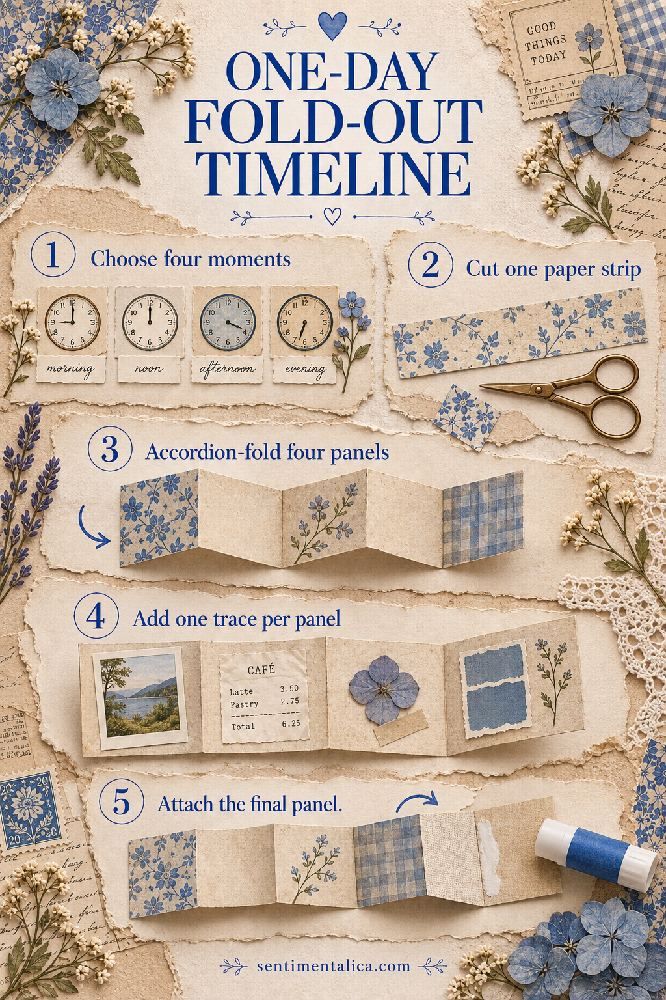
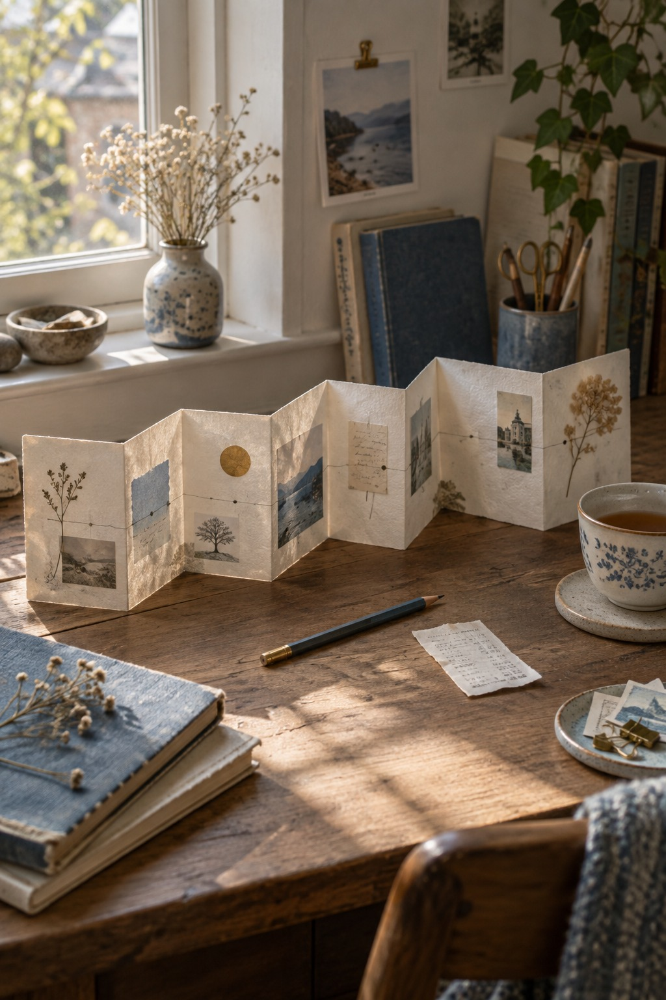

Make a one-day fold-out timeline when a full scrapbook spread feels too large for an ordinary day. Four moments, one strip of paper, and a few real traces can preserve the day without asking you to document every hour.

Choose four moments, not a complete schedule
Divide the day into morning, midday, evening, and one moment worth remembering. The fourth moment does not need to be dramatic. A changed plan, a good sandwich, a difficult phone call, or the light in one room can carry more feeling than a list of appointments.
Write each moment in five to twelve words. Short phrases keep the fold-out readable and leave room for material evidence.
Cut and fold one paper strip
Cut a strip roughly the height of your journal page and three to four times as wide. Accordion-fold it into four panels. Test the closed strip inside the journal before decorating; trim the final panel if it catches at the edge or presses into the binding.
Use medium-weight paper that can take repeated folding. Very thick cardstock creates bulk, while thin printer paper may tear along the creases. Reinforce a fragile fold with a narrow paper hinge rather than transparent office tape.
Give every panel one clear job
Place the time or part of day at the top, one sentence in the middle, and one small trace near the bottom. A trace might be a receipt fragment, tea label, color swatch, tiny photograph, or a copied line from a message. Keep originals containing private or financial information out of the journal.
Repeat one feature across all four panels, such as the same ink color or label shape. Repetition connects the timeline without making every panel identical.
Need a low-pressure image for the first panel? The free floral collection linked below gives you material to test the fold before using a favorite photograph.

Attach the timeline without trapping it
Glue only the back of the final panel to the page, or tuck the closed strip into a shallow pocket. Open and close it twice before the adhesive dries completely. The outer edge should remain easy to lift, and the folds should not pull the journal page forward.
Add a small tab if the edge disappears into the binding. A plain word such as “today” is enough; the tab should help the reader open the piece rather than become another focal point.
End with the detail the timeline cannot show
On the back, write one sentence about the day’s overall texture: hurried, generous, quiet, awkward, unexpectedly easy. Add the full date and place. This final sentence turns four isolated moments into one remembered day.
If a panel still feels empty, add a tiny weather mark, a color you noticed, or the name of one song. Do not fill space simply because it is available. A quiet panel gives the eye somewhere to pause and makes the important trace easier to recognize.
Close the journal and check the thickness. Remove raised decorations if the fold-out creates a hard lump. A useful timeline should invite opening, not make the book difficult to handle.